Cross-Validation Results: Automatic Report and Interpretation
Metrics by Fold
| Fold |
R2 |
MSE |
RMSE |
MAE |
| 1 |
-0.645874 |
1446.303536 |
38.030298 |
32.800785 |
| 2 |
0.254583 |
368.366611 |
19.192879 |
15.770574 |
| 3 |
-1.944560 |
714.012536 |
26.721013 |
22.199039 |
| 4 |
-1.169746 |
496.497209 |
22.282217 |
19.366119 |
| 5 |
-0.217126 |
1040.938002 |
32.263571 |
27.283825 |
Feature Importance (mean ± std)
| feature |
mean_importance |
std_importance |
| PR |
0.149883 |
0.050055 |
| TL |
0.127779 |
0.045894 |
| OL |
0.118215 |
0.044077 |
| TR |
0.106647 |
0.021503 |
| FR |
0.096971 |
0.032446 |
| FL |
0.089737 |
0.026678 |
| CR |
0.086982 |
0.022439 |
| PL |
0.085803 |
0.037328 |
| CL |
0.074607 |
0.020286 |
| OR |
0.063377 |
0.010894 |
Main Plots
feature_importances_mean_std.png
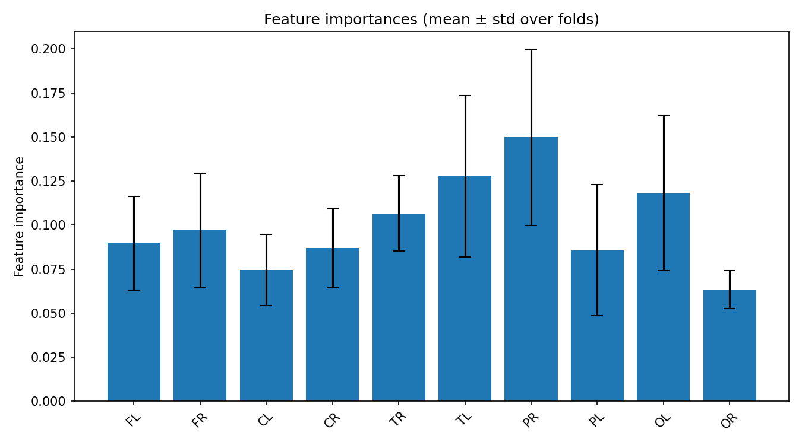
feature_importances_correlation_heatmap.png
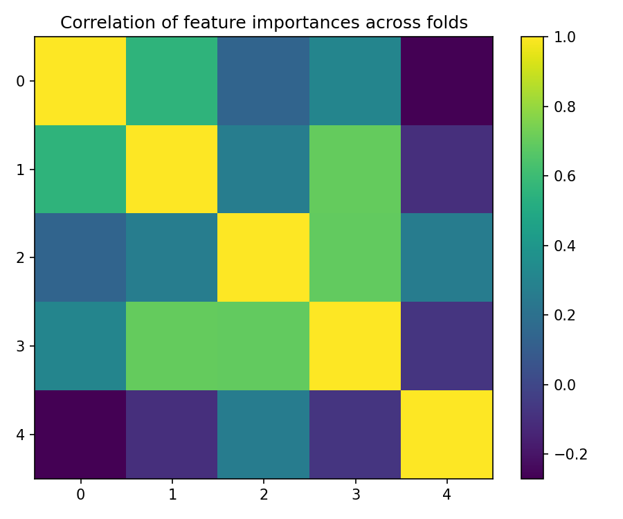
best_fold_2_feature_importances.png
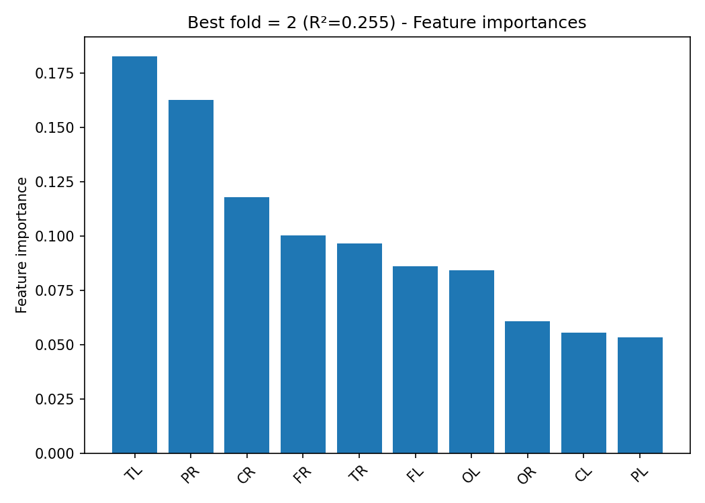
True vs Predicted Scatter Plots (by fold)
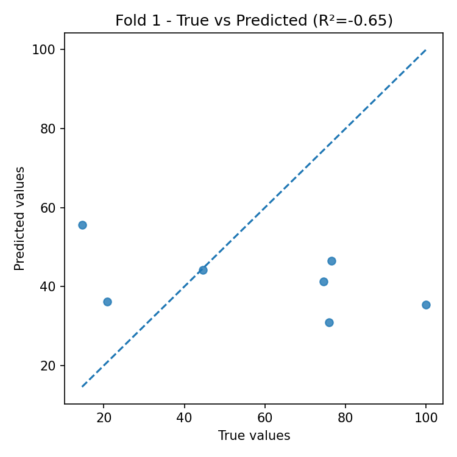
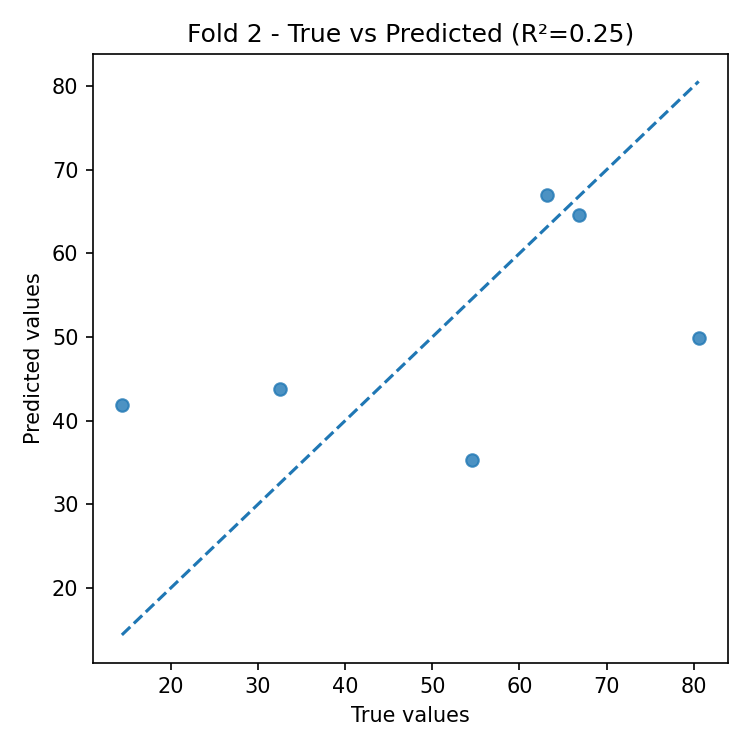
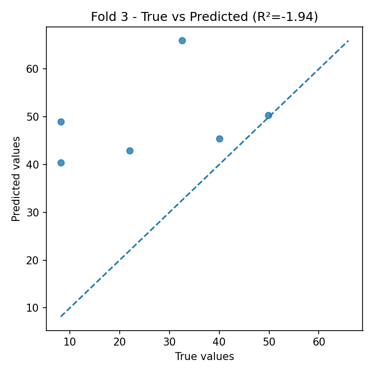
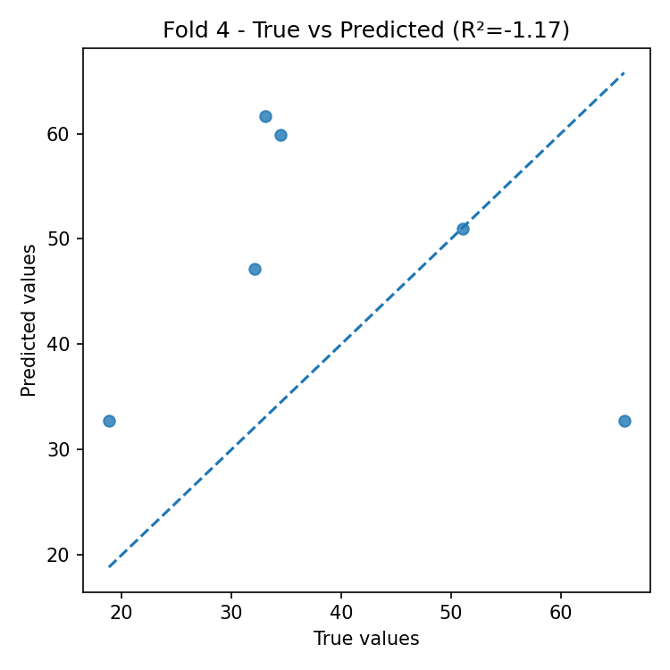
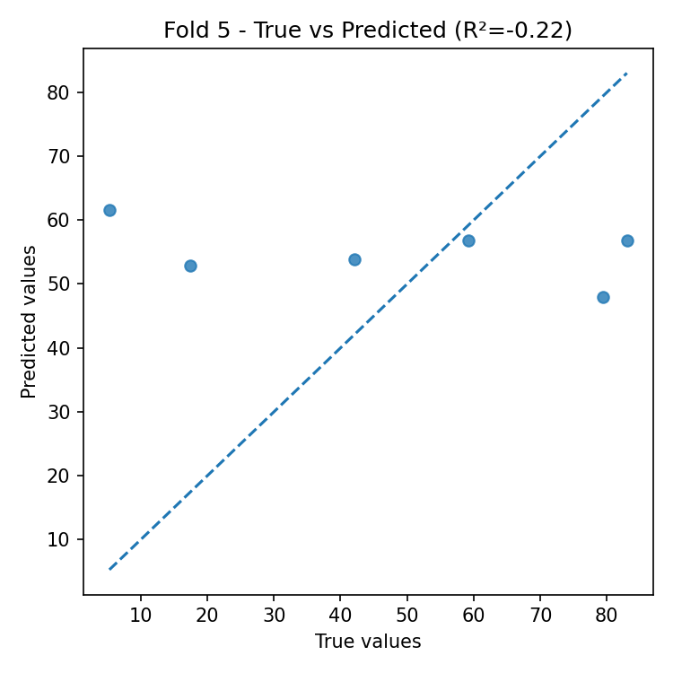
Residual Plots (by fold)
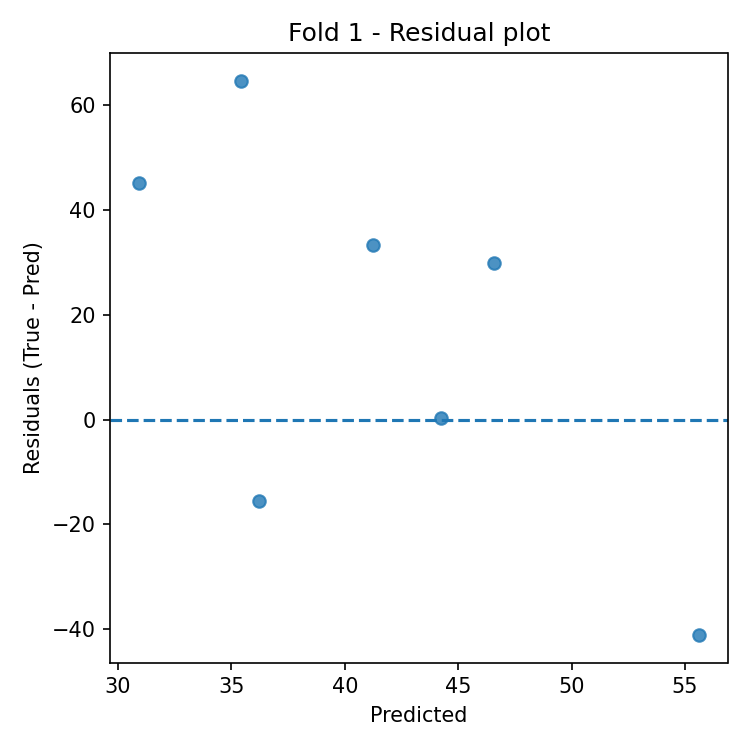
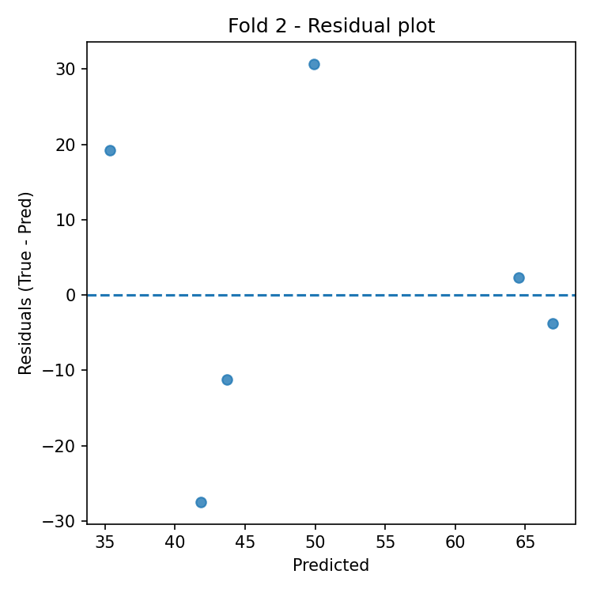
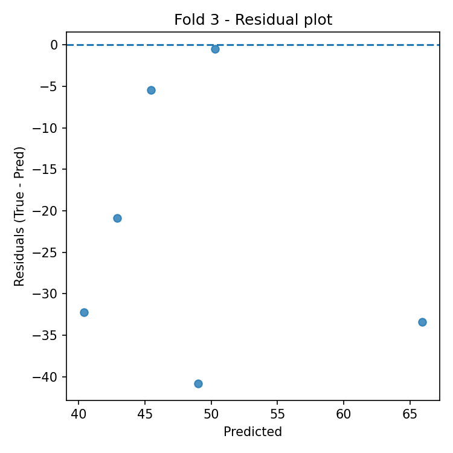
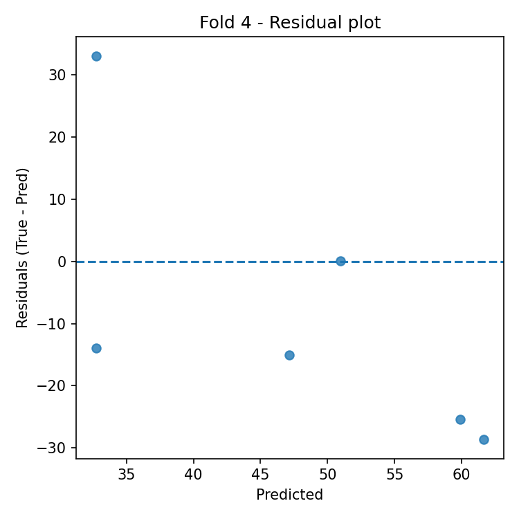
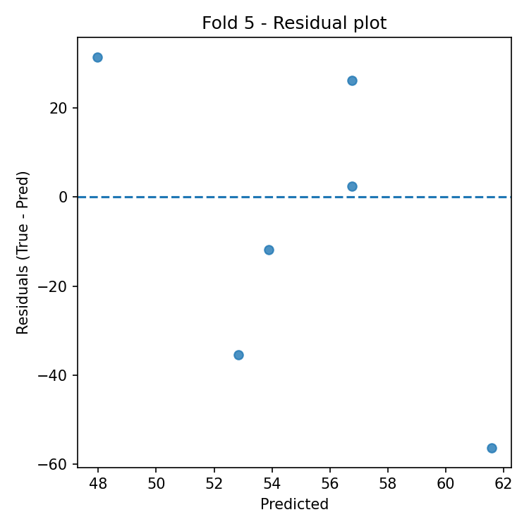
Automatic Interpretation
Overall Performance
- Mean R² across folds: -0.745 (± 0.852).
- Average error: RMSE = 27.698, MAE = 23.484 (same unit as target variable).
Model Stability
- R² variability across folds is high (std = 0.852).
- Average feature importance stability across folds: 0.031 (lower = more stable).
Most Important Features (average across all folds)
- Top-3: PR (0.150), TL (0.128), OL (0.118).
Best Fold
- Best fold: 2 with R² = 0.255.
- In the best fold, the most important features are: TL (0.183), PR (0.163), CR (0.118).
Residual Analysis (best fold)
- Residuals–predictions correlation: -0.019 (0 ≈ absence of linear bias).
- |Residuals|–predictions correlation: -0.676 (positive values indicate possible heteroscedasticity).
- Outliers (|res| > 3·std): 0.